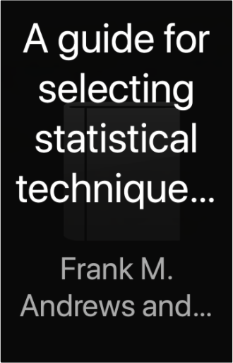

Hidden away in the Record Department of the sprawling Ministry of Truth, Winston Smith skilfully rewrites the past to suit the needs of the Party. Yet he inwardly rebels against the totalitarian world he lives in, which demands absolute obedience and controls him through the all-seeing telescreens and the watchful eye of Big Brother, symbolic head of the Party. In his longing for truth and liberty, Smith begins a secret love affair with a fellow-worker Julia, but soon discovers the true price of freedom is betrayal.  A guide for selecting statistical techniques for analyzing social science dataFrank M. Andrews and others  What Will Your New York Encounter Be? The Physics of Vibrations and Waves, 6th EditionH. J. Pain The main theme of this highly successful book is that the transmission of energy by wave propogation is fundamental to almost every branch of physics. Therefore, besides giving students a thorough grounding in the theory of waves and vibrations, the book also demonstrates the pattern and unity of a large part of physics.  Whether you want to learn some loops or practise plaits, this guide reveals everything you need to know about knot tying. With clear instructions and step-by-step photographs, you can be sure that you will select the correct type of rope. From fishing to camping, sailing to mountaineering, this handy guide will show you which knot to use.  The proponents of artificial intelligence want to prove that it is only a matter of time before computers will be doing everything that a human mind can do. They take it for granted that pleasure and pain, the appreciation of beauty and humour, consciousness and free will are capacities that a computer will display once the appropriate programs of algorithms have been developed. Some disagree, because although electronic computers can calculate very rapidly, that does not make them understand what they are doing any more than, for example, an abacus does. The author puts forward his view that there is some facet of human thinking that can never be emulated by a machine. He shows the physical and mathematical ideas that are the background to his argument - from Turing machines, algorithms and the Chinese room, via quantum mechanics, cosmology and relativity to the structure of the brain, inspiration and consciousness itself. |  Capture the essence of the Pacific Northwest with this exquisite gift book from internationally acclaimed nature photographer Art Wolfe. In 175 of his signature photographs, Wolfe focuses on his home region with masterful portraits of the mountains, forests, rivers, sea, islands, and desert of British Columbia, Washington, Oregon, and Idaho. Each chapter opens with an evocative essay by celebrated nature writer Brenda Peterson, making Pacific Northwest is the perfect keepsake for residents, visitors, and nature lovers everywhere. The Math Book: From Pythagoras to the 57th Dimension, 250 Milestones in the History of MathematicsClifford A. Pickover [THE MATH BOOK: FROM PYTHAGORAS TO THE 57TH DIMENSION, 250 MILESTONES IN THE HISTORY OF MATHEMATICS BY PICKOVER, CLIFFORD A.)[HARDCOVER] The Worst Case Scenario Survival Handbook: TravelJoshua Piven, David Borgenicht If you have to leave home, TAKE THIS BOOK! The team that brought you The Worst-Case Scenario Survival Handbook now helps you navigate the perils of travel. Learn what to do when the tarantula crawls up your leg, the riptide pulls you out to sea, the sandstorms headed your way, or your camel just wont stop. Find out how to pass a bribe, remove leeches, climb out of a well, survive a fall onto subway tracks, catch a fish without a rod, and preserve a severed limb. Hands-on, step-by-step instructions show you how to survive these and dozens of other adventures. An appendix of travel tips, useful phrases, and gestures to avoid will also ensure your safe return. Because you just never know...  This pictorial fosters the spirit of exploration and travel. It's about appreciation and seeking out adventure in all travel experiences, whether in the remote regions of Russia or the chaotic streets of Shanghai—it's a state of mind as much as a destination. This book is a reminder to even the most seasoned adventurers, there's a lifetime of discoveries yet to uncover.  Sixteen-year-old Becky is about to have her life changed. A dramatic explosion is only the start of her incredible adventure. As maid to the cockney Crown Princess of a tiny kingdom in Europe, she is plunged in a turmoil of murder and intrigue. Handbuch zur deutschen Grammatik: Wiederholen und anwendenJamie Rankin, Larry Wells This intermediate, modular approach to German grammar serves as both reference handbook and practice manual. The organization of the 30 chapters allows instructors to teach sequentially or in modules, as each chapter is self-contained and can be used in any order. The chapter structure provides a presentation of new information, followed by material for oral and written practice: Grammatik (grammar), Worschatz (vocabulary), Übungen (exercises, self-, and small-group practice), Anwendung (application, in-class group activities), Schriftliche Themen (writing topics), and Zusammenfassung (summary). |

Doddridge Library
Collection Total:
417 Items
417 Items
Last Updated:
Apr 21, 2020
Apr 21, 2020

 Made with Delicious Library
Made with Delicious Library